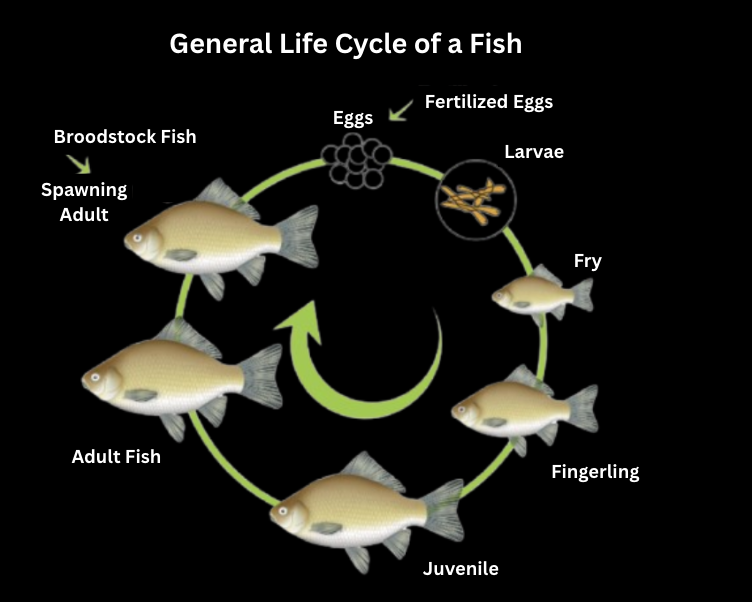
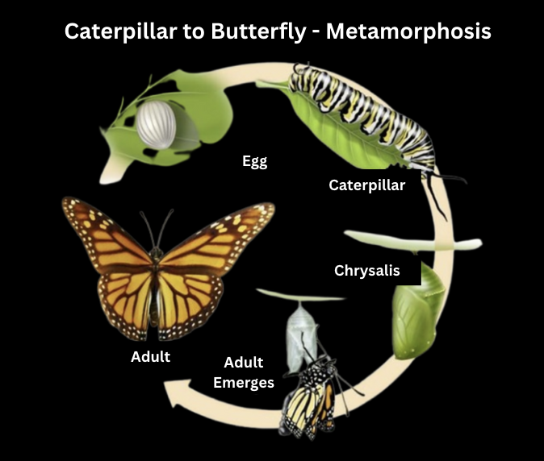
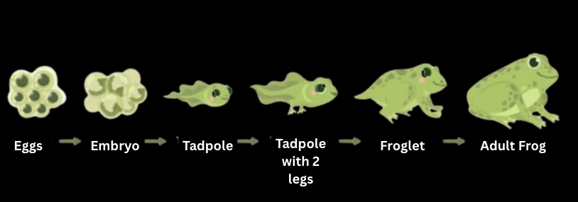

A life cycleis the series of developmental stages an organism passes through from the beginning of its life (e.g., as a fertilized egg) to the time it reproduces to create the next generation. It's nature's repeating pattern for each species.
General Stages in a Life Cycle:
- Beginning: Usually starts with a fertilized egg (zygote) in sexual reproduction, or a new individual forming asexually.
- Growth & Development: The organism increases in size and complexity, developing specialized cells, tissues, and organs.
- Maturity (Adulthood): The organism becomes capable of reproduction.
- Reproduction: The organism produces offspring, passing on its genetic material.
- Aging & Death: Eventually, the organism ages and dies.
A Quick Note On Types of Reproduction:
- Asexual Reproduction: One parent produces genetically identical offspring (clones).For example, bacteria splitting (fission), yeast budding, or plants sending out runners.
- Sexual Reproduction: Typically involves two parents contributing genetic material (gametes: sperm and egg) to produce genetically unique offspring. This fusion forms a zygote.
Haploid (n) vs. Diploid (2n)
- Diploid (2n): Cells have two sets of chromosomes (one from each parent). Most animal body cells are diploid.
- Haploid (n): Cells have one set of chromosomes. Gametes (sperm and egg) are haploid.
- Fertilization (sperm + egg) restores the diploid number in the zygote.

Developmental Paths
- Direct Development: The young organism resembles a miniature version of the adult. They grow in size but don't undergo major structural changes; Examples: Humans, birds, reptiles, most fish.
- Indirect Development: The young organism (called a larva) looks significantly different from the adult. It must undergo a major transformation, called metamorphosis, to reach the adult form; Examples: Insects (like butterflies, beetles), amphibians (like frogs), many marine invertebrates.

The Great Transformation - Metamorphosis
Metamorphosis (from Greek: "meta" = change, "morphe" = form) is a profound biological process where an animal physically develops after birth or hatching, involving a conspicuous and relatively abrupt change 1 in its body structure, physiology, and behavior through cell growth and differentiation.
Why Metamorphose? The Advantages:
- Reduced Competition: Larvae and adults often live in different habitats and eat different food. This means young ones aren't directly competing with adults for resources. (e.g., caterpillars eat leaves, butterflies drink nectar).
- Dispersal: The adult stage is often specialized for dispersal (e.g., winged adult insects can travel to new locations, while larvae might be sedentary or aquatic).
- Specialization of Life Stages: Larva: Primarily for feeding and growth. It's an "eating machine." Adult: Primarily for reproduction and dispersal.
Metamorphosis in Insects (The Classic Examples):
Insects show the most diverse and well-known examples of metamorphosis.
1. Complete Metamorphosis (Holometabolous Development):
- This involves four distinct life stages, each looking very different.
Stages:
- Egg: The starting point.
- Larva: The feeding and growth stage. Larvae molt (shed their exoskeleton) multiple times as they grow. They look nothing like the adult. Examples: Caterpillar (butterfly/moth larva), maggot (fly larva), grub (beetle larva).
- Pupa: A non-feeding, transitional stage. Inside the pupal case (e.g., chrysalis in butterflies, cocoon in moths), the larval body breaks down, and the adult form is developed through a remarkable reorganization. This stage can appear inactive, but intense biological activity occurs within.
- Adult (Imago): The reproductive stage. It has wings (in most groups) and is focused on mating and laying eggs. Looks completely different from the larva. Examples: Butterflies, moths, beetles, flies, bees, ants, wasps.
Incomplete Metamorphosis (Hemimetabolous Development):
This involves a more gradual change through three main stages.
- Egg: The starting point.
- Nymph: The young insect hatches from the egg looking like a miniature, wingless version of the adult. Nymphs feed on similar food as adults and often share the same habitat.
They grow by molting their exoskeleton multiple times.
With each molt, they look more like the adult, and wing buds (if the adult is winged) become more prominent.
- Adult (Imago): The final, mature stage, typically with fully developed wings (if applicable) and reproductive organs. Examples: Grasshoppers, crickets, cockroaches, termites, dragonflies (dragonfly nymphs, called naiads, are aquatic and look quite different from adults, so this is a more specialized type of incomplete metamorphosis), true bugs (e.g., cicadas, aphids).

Ametabolous Development (No Metamorphosis - For Contrast):
- Some primitive insects show little to no metamorphosis.
- The young (often called juveniles) hatch looking like miniature adults, differing mainly in size and sexual maturity.
They grow by molting.
Examples: Silverfish, springtails.
Ametabolous Development (No Metamorphosis - For Contrast)
Some primitive insects show little to no metamorphosis.
The young (often called juveniles) hatch looking like miniature adults, differing mainly in size and sexual maturity.
They grow by molting.
Examples: Silverfish, springtails.
Metamorphosis in Other Animals:
Amphibians (e.g., Frogs and Toads): A classic example outside of insects.
- Egg: Laid in water.
- Tadpole (Larva): Hatches from the egg. Aquatic, breathes with gills, has a tail for swimming, herbivorous.
- Metamorphosis: A dramatic transformation:
1. Hind legs appear, then front legs.
2. Tail shortens and disappears (reabsorbed).
3. Gills are replaced by lungs.
4. Digestive system changes to adapt to a carnivorous diet.
5. Eyes and mouth restructure.
- Froglet/Toadlet: A young frog that has completed metamorphosis but is not yet sexually mature.
- Adult Frog/Toad: Terrestrial or semi-aquatic, breathes with lungs (and through skin), carnivorous
- Hormonal control: Primarily regulated by thyroid hormones (like thyroxine).
Many Marine Invertebrates:
Numerous groups like corals, crustaceans (crabs, barnacles), echinoderms (starfish, sea urchins), and mollusks (snails, clams) have larval stages that are often planktonic (drifting in water). These larvae look vastly different from the sedentary or bottom-dwelling adults and serve for dispersal and feeding.
Key Takeaways for IJSO:
- Life Cycle: The sequence of stages an organism undergoes from its origin to when it reproduces. It can involve direct development (young resemble adults) or indirect development (young are larvae needing metamorphosis).
- Metamorphosis: A significant post-embryonic transformation in body form, physiology, and behavior.
- Advantages of Metamorphosis: Reduced adult-larva competition, specialized stages for feeding/growth (larva) vs. reproduction/dispersal (adult).
- Insect Metamorphosis Types: Complete (Holometabolous): Egg → Larva → Pupa → Adult (e.g., butterfly). Drastic changes. Incomplete (Hemimetabolous): Egg → Nymph → Adult (e.g., grasshopper). Gradual changes.
- Hormones (like ecdysone and juvenile hormone in insects; thyroid hormones in amphibians) play crucial roles in regulating metamorphosis.
- Metamorphosis is not limited to insects; amphibians and many marine invertebrates also exhibit it.
Written by Parthipan Kasiban